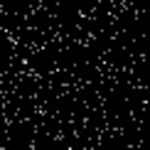
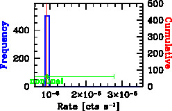
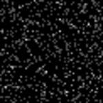
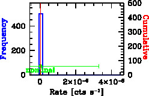

| Stacking Analysis Summary Band = 500_2000 |  |  | Mean CR +- ct stat err | Detailed Results |
|---|---|---|---|
| 9.05e-07 +- 1.87e-06 | stat_cts_500_2000.out | ||
| Bootstrap 5|16|50|84|95% percentiles | boot_histo_500_2000.out | ||
| 9.05e-07|9.05e-07|9.05e-07|9.05e-07|9.05e-07 | boot_sorteddump_500_2000.out | ||
| Stacking Analysis Summary Band = 2000_8000 |  |  | Mean CR +- ct stat err | Detailed Results |
| 2.84e-08 +- 3.27e-06 | stat_cts_2000_8000.out | ||
| Bootstrap 5|16|50|84|95% percentiles | boot_histo_2000_8000.out | ||
| 2.84e-08|2.84e-08|2.84e-08|2.84e-08|2.84e-08 | boot_sorteddump_2000_8000.out | ||